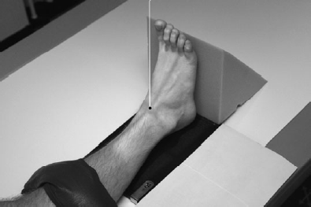

Ankle(AP)
Centering point:Directed to the midpoint between the malleoli, in line with the medial malleolus (to show the tibiotalar joint space open)
Perpendicular to the Cassette

Cassette Size:24cm x 30cm (10 x 12 ins)
Landscape, divided in two usually fits two ankle projections, use lead masking for unused area
Exposure Factors:60kVp on 3.2MaS
FFD:100cm
Bucky/Grid:No
Filter:No
Collimation:To lateral skin margins and to include the distal third of the tibia and fibula and proximal half of the metatarsals
Pathologies:Fracture, joint effusion, dislocation, foreign body, trauma
Position of patient and cassette
- Patient's leg fully extended on the table.
- Place cassette under the ankle.
- Place the lower leg in the AP position
- The foot is dorsiflexed so that the plantar surface is perpendicular to the table
- The lateral and medial malleoli will not be equidistant from the cassette (the lateral malleoli will be closer to the cassette)
- Centre to the midpoint between the malleoli
Critique:
- Positioning
- The lateral joint space is not open
-
The medial mortice is open
-
The tibiotalar joint is open and at the centre of collimation
-
Area Covered
Distal third of the tibia and fibula, proximal half of the metatarsals, lateral and medial malleoli, talus, soft tissues
-
Collimation
- Shutter A: Open to include the lateral skin margins
-
Shutter B: Open to include the distal third of the tibia and fibula and the proximal half of the metatarsals
-
CentreThe midpoint between the malleoli
-
Exposure
Bony trabecular patterns and cortical outlines are sharply defined
Soft tissues are visualised